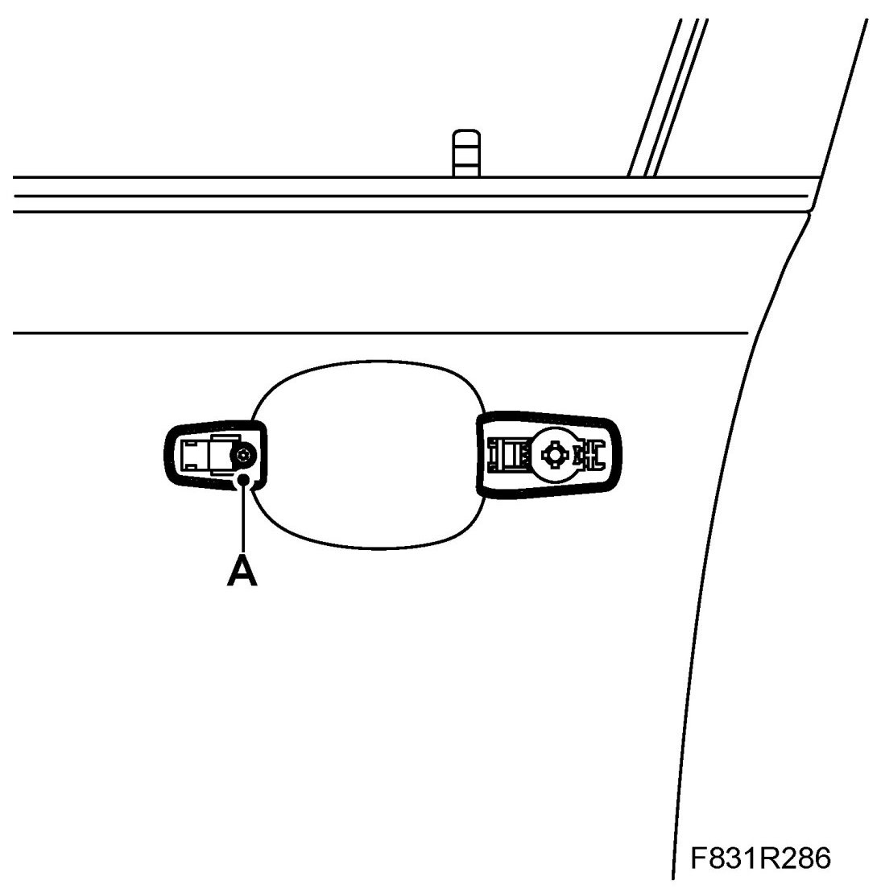
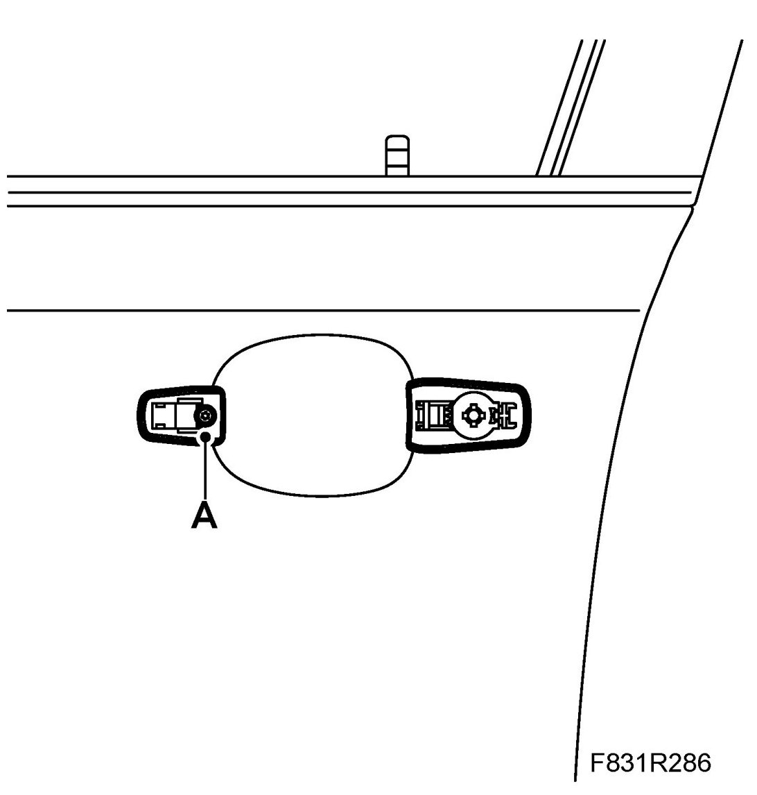
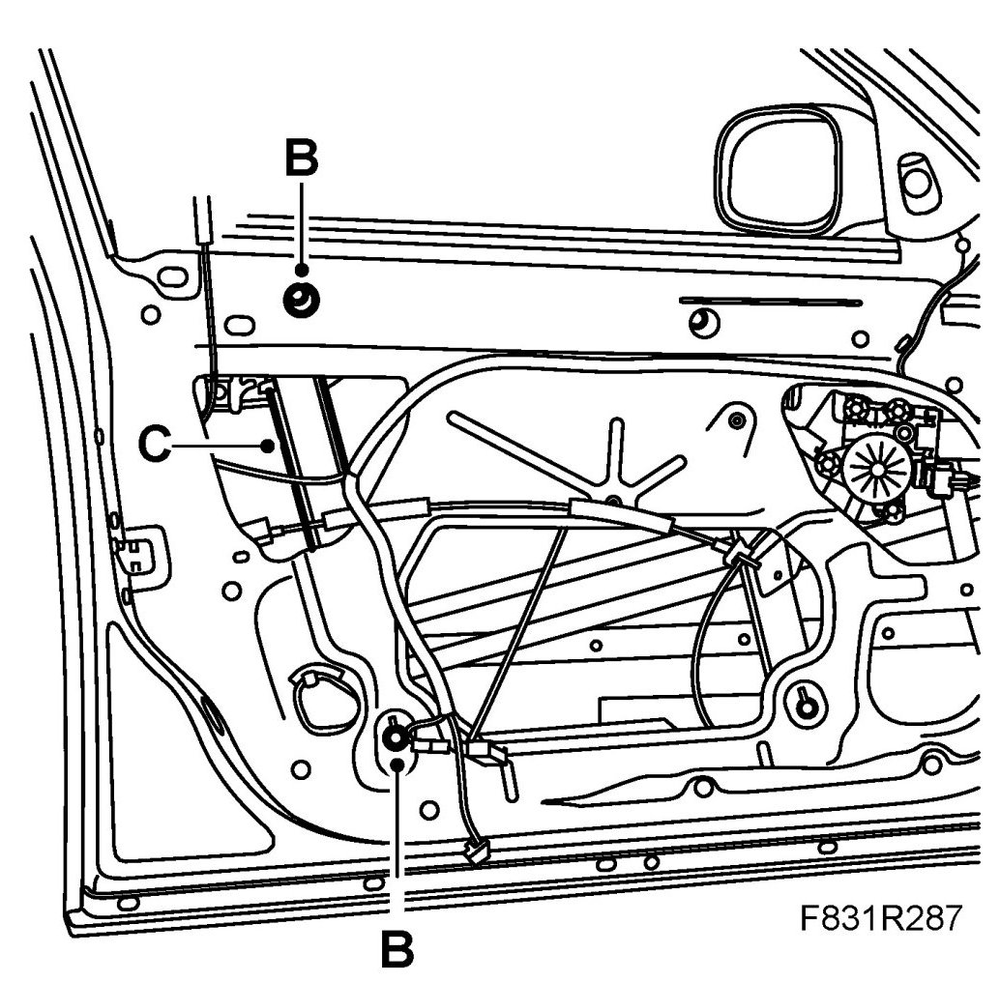

Front Door Handle, Inner Section
Front Door Handle, Inner Section
To remove
1. The window must be closed.
2. Remove the Front door trim .
3. Fold down the water barrier.
4. Remove Front door handle.
5. Remove Front door, lock unit.
6. Remove the door handle's inner part.
- Slacken the bolt (A) for the inner part.

- Slacken the nuts (B) of the window lift rail (C) and loosen the lower anchorage point.
- Remove the door handle's inner part.
To fit
1. Fit the door handle's inner part.
- Position the door handle's inner part.
- Screw in the bolt (A) for the inner part.

- Fit the window lift rail (C) with nuts (B).

2. Fit Front door, lock unit .
3. Fit Front door handle.
4. Fold the water barrier back in place.
5. Fit the Front door trim.